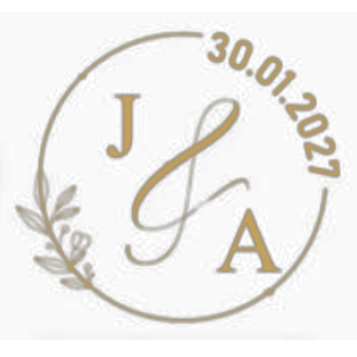
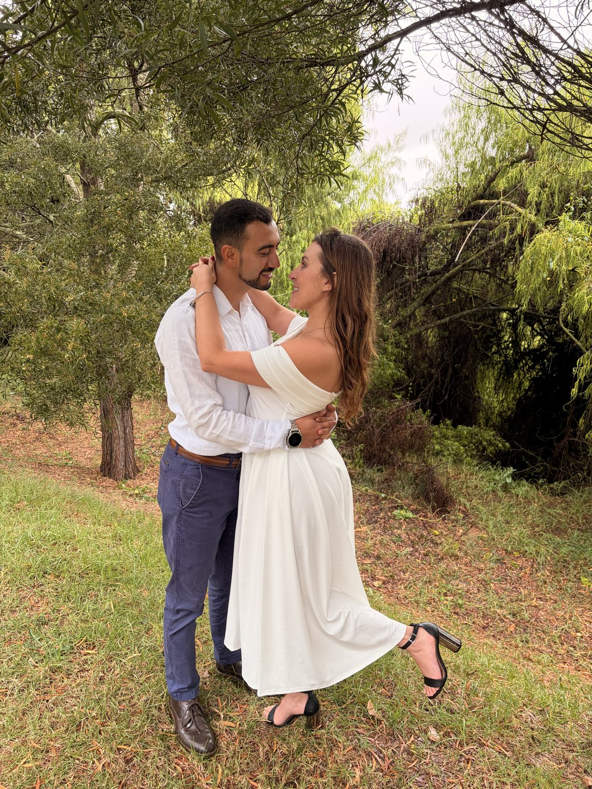

Con todo nuestro cariño, queremos que nos acompañes en el inicio de esta nueva historia.
Te esperamos para celebrar rodeados de quienes más queremos.
Ceremonia · 3:00 PMRecepción a continuaciónDress code: Formal / Elegante
Tu confirmación nos ayuda a organizar cada detalle.